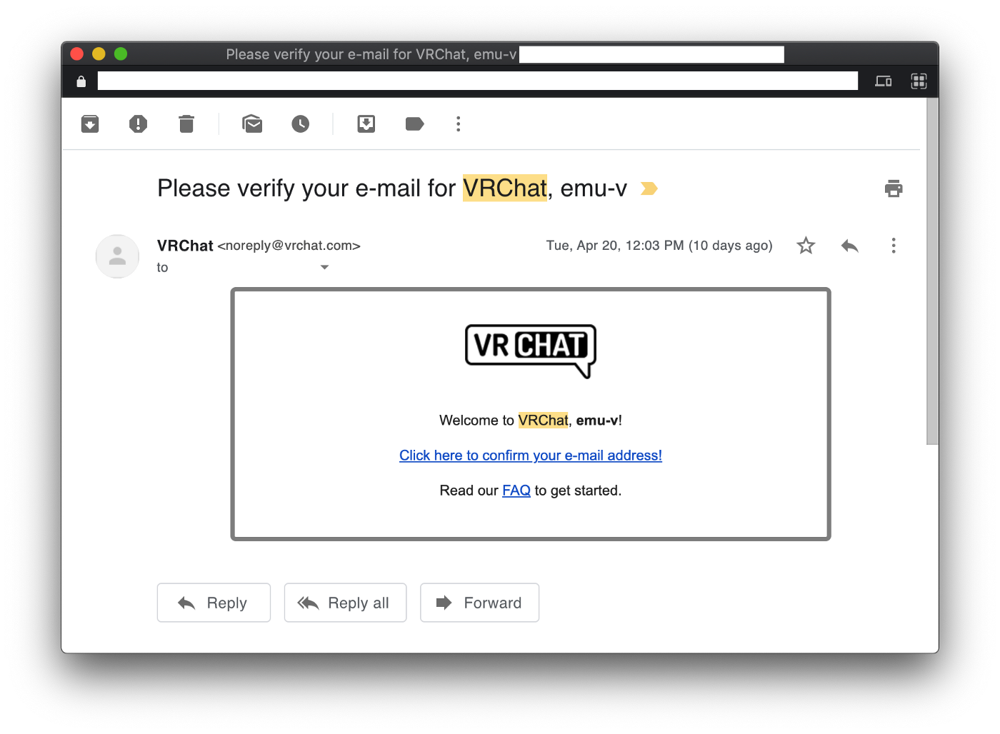
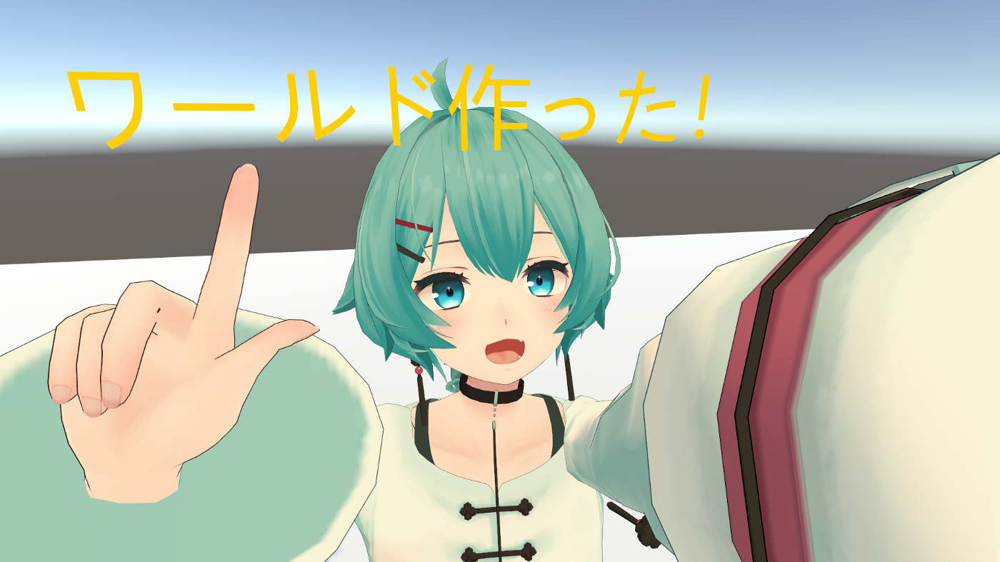

emu-v
April 30, 2021
VRChat初めての1週間
自分的先史時代
Oculus Quest（初代）は持ってた。
ときどきBeat Saver(YouTube)で遊ぶくらいの使い方。
たまたまイベントの写真みたり@mioさんや何名かのクリエイターさんを一方的に知っていてVRChatに興味はあった、だけど楽しみ方は全然知らなかった。
2021年4月20日／VRChat登録
emu-vさんのVRChat登録日、らしい。
あまり遊んだ記憶がないのでアカウント作って終わった気がする。

2021年4月25日頃／デスクトップ(Non-VR)モード、Visitor→New User
Twitter@emu0vさんの初投稿。
VRChatがとても楽しかったことが伺える。
vrchat体験したらいろんな方に親切に教えていただいた
— emu-v🌱えむ／何もしてないのにPC壊れた😭 (@emu0v) April 24, 2021
めちゃ感謝
［JP］ TUTORIAL WORLDの存在を知ってのこのこ行ってみたら、すごく親切な方々が色々教えてくださった。
「何したい〜？どういうところ行きたい〜？」って聞いてくださって、色んなワールドに連れてってくださった。
広いお花畑を縦横無尽に歩いたり、鴨さんにエサあげたりした。
そうそう、夜景が綺麗なワールドでドライブに同乗させていただいた。
「自分でアップロードしてアバター着たいんですよー」ってお話ししたらアバターさんがたくさん見れるワールドに連れて行ってくださって、
「じゃあトラストランク上げないとねー、フレンドリクエスト送るわ」
「我も我も、きっとすぐNew Userになれるよ」
みたいな流れでKnown UserやTrusted Userの方がお友だち申請してくださった。
この時はPCでヘッドマウントディスプレイ使わずにVRChatに入ってた。
でも手で持った食パンが鴨さんに食べられて小さくなり、車の助手席で音楽聴きながら流れる景色を流しみて、すっかり「VRスゲー！たのし〜」って気持ちになって「次はヘッドマウントディスプレイで来よう」って思った。
そうそう、鉛筆で空間に「たのし〜〜〜〜」って書いた。
そして本当にあっという間にNew Userになれた。
VisitorからNew Userになると「[VRChat] Upload Custom Content」みたいなタイトルのメールが届く。
ありがとうございます！
— emu-v🌱えむ／何もしてないのにPC壊れた😭 (@emu0v) April 24, 2021
ありがとうございます！！ pic.twitter.com/S4CpmcQwhF
色んなワールドに連れてってくださったりVRChatのこと教えてくださった皆様、本当にありがとうございました！
同2021年4月25日頃／初アバターアップロード
アバターをアップロードできるようになったので念願の薄荷（はっか）ちゃんをお迎えした。
I just bought 'VRChat対応アバター 薄荷 (PC版)' from 'mio3io'. https://t.co/cEJCrM23Z7 #booth_pm
— emu-v🌱えむ／何もしてないのにPC壊れた😭 (@emu0v) April 25, 2021
そしてUnityのバージョン間違えたりしつつも無事アップロードできた。
VRChatのホームで薄荷ちゃんの姿になれたときはうれしすぎて声でた。
薄荷ちゃんの作者@mioさんの「mio3io 工房」に聖地巡礼して自撮りさせていただいた。
#VRChat始めました
— emu-v🌱えむ／何もしてないのにPC壊れた😭 (@emu0v) April 25, 2021
最高じゃない（再）？ pic.twitter.com/HVOCa20Kga
お着替えできたので行ったことあるワールド中心に回って色んな方とお会いした。
お話しさせていただいたりお友だちになってくださった方ありがとうございます。
2021年4月29日頃／初ワールドアップロード
トラストランクがNew Userになるとワールドもアップロードできるようになる。
誰でも入れる「Public」ワールドには設定できないけど、自分が入ったりお友だちを招待はできる。
早速作ってみた。
地面しかない空っぽのワールドだけど入って世界の果てを見渡せたときは嬉しくてリアルにジャンプした。

同2021年4月29日／初イベント参加
4/29に「#mioアバター集会」が開催されることを知る。
4/29 #mioアバター集会 の各Join先スタッフのVRCIDはこちら！
— 燃料＠悲報:特になし (@FuelSan) April 23, 2021
事前にフレンド申請を送っておくと当日来場がスムーズに行えますので是非どうぞ！！
PCインスタンス：
燃料_Fuel
M9_TS
rocksuch
COCOLO_39
れぐふぉい
あいじす
おーいしゆべし
Questインスタンス：
sechiro
GlintFraulein
妖精の姿煮 pic.twitter.com/GEie3MrlcL
VRChat始めた
→アバターアップロードできるようになった
→初イベント開催
タイミングが良すぎる。
VRChatイベント何もわからないけどもちろん参加。
色々とまどったり人集まりすぎでワールドから弾かれたりしながら色んな方とお話しさせていただいた。
#mioアバター集会 ありがとうございました！
— emu-v🌱えむ／何もしてないのにPC壊れた😭 (@emu0v) April 29, 2021
皆さんのアバターそれぞれ可愛かったりカッコよかったり面白かったりして最高でした！
先週VRChat始めて初のイベント参加で最初だけ緊張したけどめっちゃ楽しかった♪
これからもよろしくお願いします！https://t.co/ba8S5QxJqI pic.twitter.com/QEbqwl7nnD
mioさん、運営してくださったスタッフの皆様、お話ししてくださった方、本当にありがとうございました！
次やりたいこと
つい先週まで「やりたいこともほしいものも特にないしなー」と思ってたけど、VRChat始めて急にやりたいことができた。
- アバターさん見た目カスタマイズしたい
- 自分の部屋（ワールド）作りたい
- 空飛びたい
- 火とかビーム噴きたい
UnityもBlenderもインストールしたので少しずつやっていきます。
補足／Oculus QuestとPC版VRChat
ぼくも色々教えていただいたので、何か1つくらいは初めての方に役立つことを書きたい、そんなコーナーです。
まずVRChatは「Oculus Quest単体」と「Windows PC上のSteamVR」2つのプラットフォームで動く。
ただ、これら2つのプラットフォームの世界は繋がっていて、1つのVRChatアカウントでどちらのプラットフォームにもログインできるし、違うプラットフォームでログインしてる人とも話せる。
では何が違うか？
端的にいうと「『Oculus Quest単体』は性能が低いのでVRChatも色々制約を受ける」、これに尽きると理解してる。
具体的にはOculus Quest単体では表示できないアバターや入れないワールドがたくさんある。
Oculus Questって中身はAndroidスマートフォンなので仕方ない。
ここで初見ではややこしくも便利なのが「Oculus Quest + Windows PC上のSteamVR」構成。
・Oculus Quest → VR画面表示、マイク、スピーカー ・Windows PC上のSteamVR → その他全て
っていう役割分担ができる。
Oculus QuestとWindows PCを何かで繋ぐ必要があるけど、無線（Wi-Fi環境 + Virtual Desktop）と有線（Oculus Link）の2つの方法がある、らしい。
まだ無線（Virtual Desktop）しか試してない。
設定はこちらのBlog記事で書いてくださってる通りの方法でできた、感謝。
Oculus QuestでSteamVRをプレイする - Virtual Desktop基本設定
無線でもワールド巡ってお話しするくらいの負荷なら快適に使えてる。
Wi-Fiの電波が届く範囲なら自由に動き回れるので快適。
こんな話を色々なワールドで色んな方に「Oculus QuestでもVirtual Desktop使えばSteamVRの映像を無線で飛ばしてPC版のVRChatで遊べるよ〜」と教えていただいた。